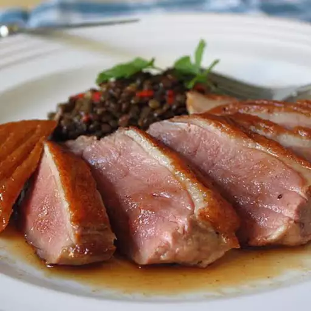

Sous Vide Duck Breast

How about a simple, almost foolproof, stovetop sous vide method that requires no special equipment? Too good to be true? Well, I'm happy to report it's so very true, and produced what my wife and I agreed was the best duck breast we've ever had.
Ingredients
- 2 (8 ounce) boneless duck breast halves, skin on
- salt and ground black pepper to taste
- 2 teaspoons fresh thyme leaves
- 1 teaspoon vegetable oil
Directions
- Cut several very shallow crosswise slashes across the skin of each duck breast about 1/2 inch apart. The cuts should only barely cut into the skin and fat; don't cut into the meat. Season skin sides with salt. Generously season meat sides with salt, black pepper, and thyme.
- Place duck breasts in a heavy-duty resealable plastic bag, squeeze out all air, and seal. Refrigerate for 1 hour.
- Fill a large Dutch oven about 2/3 full with water. Bring water to 135 degrees F (57 degrees C) over medium heat. Attach a candy or oil thermometer to the side of the Dutch oven in order to monitor and maintain the water temperature. Place a silicone hot pad into bottom of the pan to keep the plastic bag from contacting the hot bottom of the pan.
- Place plastic bag containing duck breasts in the Dutch oven, adjusting the heat as necessary to maintain the temperature at 135 degrees F (57 degrees C). Cook for 1 hour, moving the bag around occasionally and maintaining the temperature.
- Remove duck breasts from plastic bag and pat dry. Generously season skin sides with salt.
- Heat vegetable oil in a skillet over high heat. Place duck breasts with skin sides down in skillet and cook until fat renders and skin is golden brown, 5 minutes. Turn breasts over and cook until lightly browned and meat still pink in the center, 1 minute. Let duck breasts rest for 2 minutes before slicing.